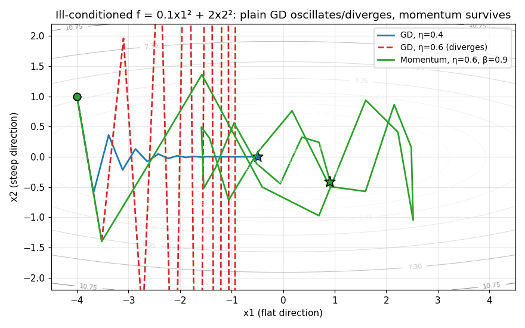

Chapter 43: Optimization for neural nets — SGD variants, init, normalization
Chapter 42 derived the gradients: one backward sweep, every \(\partial L/\partial\theta\) in hand. This chapter decides what to do with them — the optimizers, the learning-rate dial, the starting point, and the input scale. It is the piece §41.15(ii) promised (“§41.14(i)’s symmetry trap is the entry point: how to sample the initial weights, why scale matters for deep stacks, and the optimizers (SGD variants, Adam) the notebooks already name”). The spine is the GenAI Week 5 deck (“Optimization Strategies,” Balaji Srinivasan and Ganapathy Krishnamurthi, 78 slides — convex primer, GD algorithms, LR scheduling, momentum, AdaGrad, RMSProp, AdaDelta, Adam) plus its two companion notebooks, Gradient_Descent.ipynb (batch/SGD/mini-batch, LR sensitivity, batch-size experiments) and Advanced_Optimization.ipynb (momentum, Nesterov, AdaGrad, RMSProp, AdaDelta, Adam, AdamW, with torch implementations and a Rosenbrock/Beale/neural-net comparison). Every number in §43.11 was re-run here in numpy and is marked [verified-NumPy]; deck, notebook, and torch numbers are transcriptions, marked [recorded].
Notation. The deck writes the learning rate as \(\eta\); Chapters 10, 41, and 42 wrote \(\alpha\) — the same number, different letter. Subscripts \(t\) count update steps: \(g_t = \nabla_\theta J(\theta_t)\).
43.1 Why plain gradient descent needs help in deep nets
Backprop (§42.4) hands the optimizer a gradient vector. The optimizer’s job is to turn gradients into parameter moves. Vanilla GD (§10.5: \(\theta_{t+1} = \theta_t - \eta g_t\)) has one global step size and no memory — and the deck’s Week 5 material says exactly why that is not enough:
- Ravines. The deck’s own word, and its own example: \(f(x_1, x_2) = 0.1x_1^2 + 2x_2^2\) — a long narrow valley. The gradient is \(20\times\) larger in the \(x_2\) direction (\(\nabla f = (0.2x_1, 4x_2)\)). One \(\eta\) cannot serve both: a large \(\eta\) diverges across the steep direction, a small one crawls along the flat direction. “The optimization path oscillates across the narrow valley instead of moving along it.”
- Saddle points. The deck’s definition: “A saddle point is a location where all gradients of a function vanish (i.e., \(\nabla f(x) = 0\)), but which is neither a local minimum nor a local maximum.” And the deck’s warning, in full caps: “Saddle Points are More Common than Minima in High Dimensions!” Plain GD has no momentum to roll through them.
- Local minima. §41.14(iv) already settled this: the net “converges to local minima” — but “typically works very well in practice.” The deck agrees: the landscape is non-convex, full of minima and saddles, and nobody panics.
The goal line (deck’s summary, worth keeping). “Optimization in deep learning aims to minimize generalization error, not just training error.” The optimizer that overfits the training loss fastest is not automatically the best optimizer.
Basically, … “Backprop tells you which way is downhill; it doesn’t tell you how big a step to take, and one step size can’t serve a valley that is steep in one direction and flat in another. This chapter is about smarter stepping: memory (momentum), per-parameter step sizes (adaptive methods), shrinking steps over time (schedules), and not starting in a bad spot (initialization and scaling).”
43.2 The three gradient descents: batch, stochastic, mini-batch
The Gradient_Descent notebook’s framing: “The primary distinction between gradient descent variants lies in how many training samples are used to compute the gradient at each iteration.” The deck adds the geometry: vectorization — CPUs and GPUs are parallel processors; computing gradients block-by-block (mini-batch) beats one-by-one (SGD-like) because it keeps data in fast cache, while full-matrix (batch-like) is fastest per pass but touches everything.
Def (the three). - Batch GD: gradient over the entire dataset each step. Exact gradient of the full loss. Smooth, deterministic — and \(O(n)\) per step, “inefficient for redundant data,” “does not leverage modern parallel hardware.” - Stochastic GD: gradient from one randomly drawn sample per step. Cheap (\(O(1)\)), noisy, “can escape shallow local minima,” enables online learning — but fluctuates and needs careful LR scheduling. - Mini-batch GD: gradient over a batch of \(b\) samples. “The Solution: Minibatch Stochastic Gradient Descent. Instead of one example or all examples, we use a small batch of examples. This is the de facto standard for training deep neural networks.”
The mini-batch theorem (deck). With batch \(B_t \subset \{1,\dots,n\}\), \(|B_t| = b\), sampled typically without replacement: \[\boxed{\nabla f_{B_t}(x_t) = \frac{1}{b}\sum_{i \in B_t} \nabla f_i(x_t), \qquad x_{t+1} = x_t - \eta\, \nabla f_{B_t}(x_t)}.\] “The Best of Both Worlds: Computational Efficiency — significantly faster than one-by-one SGD due to vectorization. Statistical Efficiency — averaging gradients over a minibatch reduces [noise].”
The noise-reduction half is simple: each sample’s gradient is an unbiased estimate of the true gradient, and averaging \(b\) independent ones divides the variance by \(b\) (§21’s logic in miniature). That is the entire statistical argument for \(b > 1\).
eg 1 (the notebook’s batch-size experiment, [recorded]). On the notebook’s synthetic linear regression (\(n = 1000\), \(y = 3.5x + 2 + \varepsilon\)), batch sizes \(1, 8, 32, 64, 128, 256\) with the same \(\eta = 0.01\): - Small batches (\(1\)–\(32\)): more frequent updates, more noise, “better generalization (more noise can help escape local minima),” memory-light. - Large batches (\(128\)–\(256\)): fewer updates per epoch, stabler gradients, better hardware use — but “may converge to sharp minima (worse generalization),” more memory. - Common choices: \(32, 64, 128, 256\). The notebook’s rule of thumb: “Larger batch sizes need larger learning rates.”
PyTorch vocabulary (notebook, [recorded]). In PyTorch, torch.optim.SGD is the algorithm and the DataLoader’s batch_size picks the variant: batch_size = 1 is stochastic, batch_size = n is batch, \(32\)–\(128\) is mini-batch. One optimizer, three regimes.
Basically, … “How many examples per gradient? All of them (accurate but slow), one (fast but jumpy), or a batch (the sweet spot). Mini-batch wins because averaging \(b\) noisy gradients divides the noise by \(b\), and hardware does batches in parallel anyway.”
43.3 Momentum: remember where you were going
The physical analogy (deck). “Imagine a ball rolling down a hill. The ball accumulates velocity as it rolls down.” In steep directions the velocity keeps changing sign and the oscillations “tend to cancel out”; in flat directions it “consistently accelerates, building up speed.” Momentum dampens the ravine’s zig-zag and speeds the crawl along the valley floor — §43.1(i)’s fix.
Theorem (momentum, deck). With \(g_t = \nabla f(x_t)\), velocity \(v_t\), momentum \(\beta \in [0, 1)\): \[\boxed{v_t = \beta v_{t-1} + g_t \quad \text{(accumulate velocity)}, \qquad x_{t+1} = x_t - \eta v_t \quad \text{(update with velocity)}}.\] Typical \(\beta = 0.9\); the notebook also lists \(0.99\) for smooth landscapes.
What the velocity really is (deck’s “leaky averages” slide). Expand the recurrence: \[v_t = \beta v_{t-1} + g_t = \beta^2 v_{t-2} + \beta g_{t-1} + g_t = \cdots = \sum_{\tau=0}^{t} \beta^{\,t-\tau} g_\tau.\] \(v_t\) is a weighted average of all past gradients, weights \(\beta^{t-\tau}\) decaying exponentially — “giving more importance to recent gradients.” The weight sum converges: \(\sum_{i=0}^{\infty} \beta^i = 1/(1-\beta)\), so the update step is roughly \(\eta/(1-\beta)\) times the averaged gradient. For \(\beta = 0.9\) that is \(10\times\eta\) — a momentum-\(\!0.9\) optimizer with nominal rate \(\eta\) moves, on average, like plain GD with rate \(10\eta\) [verified-NumPy: \(\sum_{k=0}^{60} 0.9^k = 9.984 \approx 10\)].
Note. “A larger \(\beta\) (e.g., \(0.95\)) means a longer ‘memory’ of past gradients. A smaller \(\beta\) means a shorter memory.” Longer memory = more smoothing = slower to react when the slope reverses; that is the trade.
Basically, … “Plain GD has amnesia — every step trusts only the current slope, so it zig-zags across the ravine. Momentum keeps a running average of past slopes (recent ones count most). Consistent directions build up speed; contradictory ones cancel out. The math is a leaky average, the physics is a rolling ball.”
43.4 Nesterov: look before you leap (notebook-only)
Classical momentum computes the gradient at the current position, then steps. Nesterov computes the gradient at the approximate future position — where the accumulated velocity is about to take you: \[\boxed{v_t = \beta v_{t-1} + \nabla_\theta J(\theta_t - \eta\beta v_{t-1}), \qquad \theta_{t+1} = \theta_t - \eta v_t} \quad \text{[recorded]}.\] “Classical Momentum: ‘I’m going in this direction with this velocity, let me check the gradient.’ Nesterov Momentum: ‘I’m about to go in this direction, let me check the gradient there first.’” The look-ahead is a form of error correction — it notices the slope reversing before stepping into it, so it overshoots less.
Two facts from the notebook, kept as stated: it converges at \(O(1/t^2)\) vs classical momentum’s \(O(1/t)\) for convex functions, and “for non-convex deep learning, benefits over classical momentum are often marginal.” The notebook’s torch implementation uses the efficient reformulation (equivalent, one gradient evaluation): \[v_t = \beta v_{t-1} + g_t, \qquad \theta_{t+1} = \theta_t - \eta(\beta v_t + g_t) \quad \text{[recorded]}.\]
Note. Nesterov does not appear in the deck — it is notebook-only. In PyTorch it is a flag on SGD (nesterov=True), not a separate optimizer [recorded].
Basically, … “Momentum looks at the slope where you stand; Nesterov looks at the slope where you’re about to stand. Same memory, smarter aim — at the price of one extra conceptual gradient.”
43.5 Adaptive methods I: AdaGrad, RMSProp, AdaDelta
Momentum fixes the direction problem. The adaptive family fixes a different one: one global \(\eta\) cannot fit parameters whose gradients live on wildly different scales (§43.1(i) again). Their answer: give every parameter its own learning rate, derived from its own gradient history.
i) AdaGrad. Keep a per-parameter accumulator of squared gradients, \(s_t = s_{t-1} + g_t \odot g_t\), and divide the global rate by it (deck’s theorem): \[\boxed{x_{t+1} = x_t - \frac{\eta}{\sqrt{s_t + \epsilon}} \odot g_t} \quad \text{[recorded]}.\] Intuition (deck): “If a parameter has consistently large gradients, its entry in \(s_t\) will grow quickly, rapidly decreasing its effective learning rate. If a parameter has small or zero gradients (like for a sparse feature), its entry in \(s_t\) grows slowly, keeping its effective learning rate high.” On the deck’s ill-conditioned problem, AdaGrad “acts as a preconditioner. It automatically corrects for the different scales of the gradients” — the \(x_2\) accumulator grows faster than the \(x_1\) one, scaling the steep direction down harder, “as if the problem were better conditioned.”
The fatal flaw (deck): “The accumulator \(s_t\) only ever increases. After enough time, the learning rate for all parameters will approach zero, stopping training prematurely.” The sum of squared gradients is a one-way ratchet: \(\lim_{t\to\infty} \eta/\sqrt{s_t} = 0\). Fine for short, sparse problems (NLP word embeddings — the notebook’s recommended use); bad for long training runs.
ii) RMSProp. “Fixing AdaGrad’s decaying learning rate”: replace the ever-growing sum with an exponentially decaying average, \(E[g^2]_t = \beta E[g^2]_{t-1} + (1-\beta)g_t^2\) (the deck and notebook; the notebook notes it was “developed by Geoff Hinton in his Coursera lecture (never formally published!)”): \[\boxed{x_{t+1} = x_t - \frac{\eta}{\sqrt{E[g^2]_t + \epsilon}} \odot g_t}, \qquad \beta \approx 0.9 \quad \text{[recorded]}.\] Old gradients decay away, so the rate stops shrinking — “recent gradients have more influence,” and training “maintains learning capability throughout.” The notebook’s insight: with \(\beta = 0.9\), roughly the last \(10\) gradient updates set the learning rate. Defaults: \(\eta = 0.001\), \(\beta = 0.9\) [recorded].
iii) AdaDelta. Same decaying averages, but no learning rate at all — the update size comes from the ratio of the RMS of past parameter updates to the RMS of gradients (deck’s theorem, condensed): \[\boxed{s_t = \rho s_{t-1} + (1-\rho)(g_t \odot g_t), \quad \Delta x_t = -\frac{\sqrt{\Delta x_{t-1} + \epsilon}}{\sqrt{s_t + \epsilon}} \odot g_t, \quad x_{t+1} = x_t + \Delta x_t} \quad \text{[recorded]}.\] “The term \(\sqrt{\Delta x_{t-1}}/\sqrt{s_t}\) approximates a learning rate, effectively self-adjusting based on the recent dynamics.” The selling point is unit-correctness: the step has the same units as the parameter. The cost: “can be slower to converge than Adam,” extra memory for the update history.
Basically, … “AdaGrad: each parameter’s step size = global rate divided by (root of its total past squared gradients) — big-history parameters get small steps, rare ones keep big steps; but the denominator only grows, so training eventually freezes. RMSProp: use a decaying average instead — old history fades, the freeze never comes. AdaDelta: drop the global rate entirely — let the ratio of past updates to past gradients set the step.”
43.6 Adam: momentum + RMSProp, with bias correction
“Adam is arguably the most popular ‘go-to’ optimization algorithm. It combines the best of two worlds: Momentum + RMSProp” (deck). Keep the deck’s two-moment notation: \(v_t\) = exponentially weighted average of gradients (the momentum part), \(s_t\) = exponentially weighted average of squared gradients (the RMSProp part).
Theorem (Adam, deck). With decay rates \(\beta_1, \beta_2\): \[\begin{align*} v_t &= \beta_1 v_{t-1} + (1-\beta_1)g_t \quad \text{(first moment: direction)} \tag{1}\\ s_t &= \beta_2 s_{t-1} + (1-\beta_2)(g_t \odot g_t) \quad \text{(second moment: scale)} \tag{2}\\ \hat v_t &= \frac{v_t}{1-\beta_1^t}, \qquad \hat s_t = \frac{s_t}{1-\beta_2^t} \quad \text{(bias correction)} \tag{3}\\ x_{t+1} &= x_t - \eta\,\frac{\hat v_t}{\sqrt{\hat s_t} + \epsilon} \quad \text{[recorded]} \tag{4} \end{align*}\] Defaults: \(\beta_1 = 0.9\), \(\beta_2 = 0.999\), \(\eta = 0.001\), \(\epsilon = 10^{-8}\) [recorded].
Why the bias correction (3). Both moments start at \(0\), so early on they underestimate the truth — they are “biased towards zero.” The notebook spells out the fix: divide by \(1-\beta^t\), which starts small and approaches \(1\).
eg 2 (one Adam step, by hand — [verified-NumPy]). Scalar parameter, first step, \(g_1 = 0.5\): \[v_1 = (1-0.9)(0.5) = 0.05, \qquad s_1 = (1-0.999)(0.5^2) = 0.00025,\] \[\hat v_1 = \frac{0.05}{1-0.9} = 0.5, \qquad \hat s_1 = \frac{0.00025}{1-0.999} = 0.25,\] \[\text{step} = \eta \cdot \frac{0.5}{\sqrt{0.25}} = \eta \cdot 1.0.\] The correction restores the step to \(\eta \cdot \mathrm{sign}(g)\) on the very first iteration. Without it, the step would be \(\eta \cdot 0.05/\sqrt{0.00025} \approx 3.16\,\eta\) — a directionless \(3.16\times\) overshoot cooked up from zero-initialization, not from the data. That is what (3) deletes.
The notebook’s honest caveats. Adam “may not converge to optimal solution in some convex optimization problems,” “can generalize worse than SGD with momentum in some cases,” and “standard L2 regularization doesn’t work as intended” — the last of which gets its own section next.
Basically, … “Adam = momentum’s running-average direction divided by RMSProp’s running-average scale, per parameter. The direction comes from the average gradient, the step size from the average squared gradient, and the bias correction just undoes the zero-start so the first steps aren’t nonsense. Defaults (\(\beta_1{=}0.9\), \(\beta_2{=}0.999\), \(\eta{=}0.001\)) work out of the box — which is why it is the default.”
43.7 Weight decay: the \(\lambda\) that rides inside the optimizer
Chapter 28’s ridge penalty and the optimizer’s weight decay are the same idea wearing two hats. The deck’s convex-primer slide gives the penalty view: “Weight decay is a penalty method. Adding \(\tfrac{\lambda}{2}\lVert w\rVert^2\) to the loss is equivalent to enforcing a constraint \(\lVert w\rVert^2 - r^2 \le 0\) for some radius \(r\).” The \(\lambda\) is the same \(\lambda\) as §28’s \(J(w) = \tfrac12 (Xw-y)^T(Xw-y) + \tfrac{\lambda}{2}\lVert w\rVert_2^2\), whose gradient picks up \(+\lambda w\) (§28: \(\nabla_w J = X^TXw - X^Ty + \lambda w\)).
In plain SGD the two views coincide. Put the penalty in the loss: the gradient becomes \(g_t + \lambda\theta_t\), and the update is \[\theta_{t+1} = \theta_t - \eta(g_t + \lambda\theta_t) = (1-\eta\lambda)\theta_t - \eta g_t.\] Each step shrinks the weights by the fraction \(\eta\lambda\) before stepping downhill — literally “decay the weights.” Adding \(\tfrac{\lambda}{2}\lVert w\rVert^2\) to the loss and multiplying the weights by \((1-\eta\lambda)\) are the same update.
In Adam they come apart (the notebook’s key point, [recorded]). If you add the penalty to Adam’s loss, the \(\lambda\theta_t\) term enters the gradient, and the adaptive scaling divides it by \(\sqrt{\hat s_t}\) — so different parameters get different effective regularization, “not equivalent to L2 regularization.” AdamW (the notebook, [recorded]) applies the decay after the adaptive update instead: \[\boxed{\theta_{t+1} = \theta_t - \eta\left(\frac{\hat v_t}{\sqrt{\hat s_t} + \epsilon} + \lambda\theta_t\right) = (1-\eta\lambda)\theta_t - \eta\frac{\hat v_t}{\sqrt{\hat s_t} + \epsilon}}.\] The second form shows it: true weight decay — every parameter shrinks by the constant fraction \(\eta\lambda\) per step, independent of its gradient history. “With AdamW, the effective update becomes \(\theta_{t+1} = (1-\eta\lambda)\theta_t - \eta\hat v_t/(\sqrt{\hat s_t}+\epsilon)\).”
The notebook’s verdict: AdamW “consistently outperforms Adam in transformer models (BERT, GPT, etc.), computer vision (ResNets, Vision Transformers), fine-tuning pre-trained models” — and the 2025 default is “AdamW (lr=0.001, weight_decay=0.01)” [recorded]. Typical weight-decay values: \(0.01\)–\(0.1\) for vision, \(0.001\)–\(0.01\) for NLP, \(0.0001\)–\(0.001\) for fine-tuning [recorded].
Basically, … “Weight decay = shrink the weights a little every step (\(1-\eta\lambda\)), the optimizer’s version of Chapter 28’s \(\lambda\) tax. In plain SGD, putting the tax in the loss is identical. In Adam, the tax goes through the adaptive divider and comes out uneven — so AdamW applies the shrink after the adaptive step, the same fraction for every parameter.”
43.8 Learning-rate schedules: shrink the steps as you settle
“Adjusting the learning rate \(\eta\) during training is often as important as the choice of optimizer” (deck). Three reasons, the deck’s own list:
- Magnitude: “If \(\eta\) is too large, the optimizer diverges. If too small, it converges too slowly.”
- Decay: “As we approach a minimum, we need to take smaller steps to avoid overshooting and to settle into the minimum.”
- Warmup: “At the start of training, parameters are random. Large steps might be harmful. A ‘warmup’ period with a small initial learning rate that gradually increases can improve stability.”
The five common schedules (deck, \(t\) = update step; [recorded]). - Piecewise constant: \(\eta(t) = \eta_i\) for \(t_i \le t < t_{i+1}\) — e.g. “reduce LR by \(10\times\) every \(30\) epochs.” - Exponential decay: \(\eta(t) = \eta_0 e^{-\lambda t}\). - Polynomial decay: \(\eta(t) = \eta_0 (\beta t + 1)^{-\alpha}\) — “a popular choice is \(\alpha = 0.5\), which gives a decay rate of \(O(1/\sqrt{t})\),” with “good theoretical convergence properties for convex problems.” - Inverse time decay: \(\eta(t) = \eta_0/(1 + kt)\). - Cosine annealing: \(\eta(t) = \eta_{\min} + \tfrac12(\eta_{\max} - \eta_{\min})(1 + \cos(\pi t/T_{\max}))\).
eg 3 (the five, side by side — [verified-NumPy]). \(\eta_0 = 0.2\), \(\lambda = 0.01\), \(\alpha = 0.5\), \(\beta = 1\), \(k = 0.01\), \(\eta_{\max} = 0.2\), \(\eta_{\min} = 0\), \(T_{\max} = 1000\):
| \(t\) | piecewise | exponential | polynomial (\(\alpha{=}0.5\)) | inverse time | cosine |
|---|---|---|---|---|---|
| 0 | 0.2000 | 0.2000 | 0.2000 | 0.2000 | 0.2000 |
| 100 | 0.2000 | 0.0736 | 0.0199 | 0.1000 | 0.1951 |
| 500 | 0.2000 | 0.0013 | 0.0089 | 0.0333 | 0.1000 |
| 1000 | 0.2000 | 0.0000 | 0.0063 | 0.0182 | 0.0000 |
Exponential dies fastest; cosine stays high longest then lands exactly on \(\eta_{\min}\) at \(T_{\max}\); inverse time and polynomial sit in the middle.
Note (the §37.3 connection). sklearn’s 'invscaling' — the stated default of SGDRegressor — is the inverse-time shape: \(\eta(t) = \eta_0/t^{\text{power\_t}}\) (§37.3). It differs from the deck’s \(\eta_0/(1+kt)\) only in the \(+1\) in the denominator (sklearn indexes its steps so the division is safe). Same family, same idea — §37.3 was already scheduling; this chapter names the relatives.
Basically, … “Start bold, finish careful. Big steps early cross the landscape fast; small steps late settle into the minimum without bouncing out. Pick a decay curve (or steps, or cosine), and give training a gentle warmup first — random starting weights plus big steps is how explosions happen.”
43.9 Normalization: fix the scale before the optimizer has to
The adaptive methods of §43.5 are a reactive fix for bad scale: they notice the gradient scales differ and compensate. The proactive fix is to never hand the optimizer badly scaled inputs in the first place — and this book already met it.
§37.3’s sermon returns. “SGD is sensitive to feature scaling, so it is highly recommended to scale input feature matrix.” The slide’s fix: StandardScaler before SGDRegressor (§37.3). Why it matters is now visible in optimizer terms: if feature \(x_1\) lives in \([0,1]\) and \(x_2\) in \([0,1000]\), the loss surface is exactly the deck’s ill-conditioned valley — one direction steep, one flat, one \(\eta\) serving both. Standardizing (\(x' = (x-\mu)/\sigma\)) re-rounds the valley at the source instead of asking AdaGrad to precondition it at runtime.
What the sources don’t cover (flagged). The Advanced_Optimization notebook’s classifier stacks nn.BatchNorm1d after every hidden layer — but never explains batch normalization: no formula, no derivation, no discussion. The deck is silent too. So: batch normalization is not derived in this chapter; the GenAI W5 materials use it without explaining it. What the course does support, fully, is the input-scaling story above. Batch norm is a natural candidate for a later pass over Chapter 44 or a dedicated normalization note.
Basically, … “Don’t make the optimizer fight your units. If one feature is \(1000\times\) another, the loss landscape is a ravine and you’re paying adaptive-optimizer rent to cross it. Scale the features first (\(z\)-scores, §37.3) and the valley gets round — the cheapest preconditioner is the one you never need.”
43.10 Initialization: where the weights start
The trap you already know (§41.14(i)). “Why did we not initialize all parameters to zero?” — because “since the incoming weights are the same for all neurons in a layer, there is nothing to differentiate between two neurons… they will evolve identically.” The MLT slides’ fix: sample \(\theta \sim \mathcal{N}(0, 1)\); the §41.10 class uses \(\mathcal{N}(0, 0.5^2)\) (§36.6 on seeding). Randomness breaks the symmetry; that part is settled.
The scale question — what the sources actually support. The deck never names an initialization scheme (no Xavier, no He — see the review log). But the scale of the starting weights controls two quantities this book has already derived, so the reasoning below is book-internal, not course-sourced:
- The forward scale. \(z = Wx + b\): if the weights are too large, \(|z|\) is large and sigmoid/tanh saturate — the neuron sits on a flat end where nothing changes (§41.7).
- The backward scale (§42.8(ii)). The \(\delta\) recursion multiplies the error by \(g'(z^{[l]})\) at every layer. For sigmoid, \(g'(z) \le 0.25\), and at saturation (\(|z| \ge 3\)) it is \(\le 0.045\) — every backward step shrinks the error to at most a twentieth. Too-large initial weights therefore strangle the gradient before training starts: the error signal of §42.4 cannot survive the trip back. Too-small weights keep every neuron in the linear region, which survives but learns nothing distinctive — and deep stacks of tiny weights shrink the forward activations layer by layer.
So the initialization problem, in this book’s terms: pick a random scale that keeps \(z\) in the region where \(g'(z)\) is healthy — neither saturated nor dead — given the fan-in of the layer. The GenAI W5 materials do not give the formula for that scale; the notebook’s troubleshooting table lists “poor initialization” as a cause of “training loss not decreasing” and prescribes “proper initialization” without defining it [recorded]. This is a genuine gap in the course materials, flagged in the review log rather than filled from memory.
Basically, … “Zero-init is banned (§41.14(i)) — random it is. But how random? Too big: neurons saturate, and the §42.8(ii) \(\delta\) recursion shrinks the error signal to nothing before the first update. Too small: everything stays tiny and timid. The right scale keeps each neuron’s \(z\) where the activation’s slope is alive — the course never writes down the formula, so this chapter states the criterion and flags the gap.”
43.11 The optimizers, traced: numpy on the deck’s own problem
Time to watch §43.1–§43.6 happen. The deck’s ill-conditioned problem, \(f(x_1,x_2) = 0.1x_1^2 + 2x_2^2\) with \(\nabla f = (0.2x_1, 4x_2)\), from \(x = (-4, 1)\) (\(f = 3.6\)). All traces below re-run here [verified-NumPy].

eg 4 (plain GD: the oscillation, then the divergence). \(\eta = 0.4\):
step 0: x=(-4.0000,+1.0000) f=3.6000
step 1: x=(-3.6800,-0.6000) f=2.0742
step 2: x=(-3.3856,+0.3600) f=1.4054
step 3: x=(-3.1148,-0.2160) f=1.0635
step 4: x=(-2.8656,+0.1296) f=0.8547\(x_2\) alternates sign — the ravine zig-zag, decaying by \(0.6\) per step — while \(x_1\) crawls (factor \(0.92\)). Why: each step multiplies \(x_1\) by \((1-0.2\eta) = 0.92\) and \(x_2\) by \((1-4\eta) = -0.6\). Now \(\eta = 0.6\): the \(x_2\) factor becomes \(1-2.4 = -1.4\), \(|{-1.4}| > 1\), and
step 1: f= 5.1590 step 3: f=15.8021 step 6: f=113.7329— “a high learning rate (\(\eta = 0.6\)) that caused GD to diverge” (deck, verbatim). One \(\eta\) cannot serve both directions: this is §43.1(i) with numbers.
eg 5 (momentum survives the \(\eta\) that kills GD). Momentum, \(\eta = 0.6\), \(\beta = 0.9\):
step 1: f=5.159040 step 5: f=1.945453 step 10: f=1.958112
step 15: f=1.137399 step 20: f=0.716362 step 25: f=0.423362 step 30: f=0.171884It swings — the velocity overshoots early — but the oscillations cancel instead of compounding, and it converges (\(f < 10^{-6}\) at step \(120\)). The deck’s claim, checked: momentum tames the learning rate plain GD cannot survive.
eg 6 (the preconditioner effect, counted in steps). Steps to reach \(f < 10^{-6}\) from the same start: - Plain GD, \(\eta = 0.4\): 86 steps. - Momentum, \(\eta = 0.6\), \(\beta = 0.9\): 120 steps (survives the bigger \(\eta\); the swings cost steps). - AdaGrad, \(\eta = 2.0\) (the deck’s own demo setting): 13 steps — the per-parameter scaling walks almost straight down the valley, “as if the problem were better conditioned.” - RMSProp: \(\eta = 0.1\) → 64 steps; \(\eta = 0.01\) crawls (still \(5.25\times 10^{-5}\) after \(10{,}000\) steps); \(\eta = 0.5\) oscillates (\(f = 0.13\) stuck). The notebook’s warning, earned: adaptive methods “still require manual LR tuning.” - Adam, \(\eta = 0.01\): 1227 steps (the default LR is conservative here; Adam’s strength is robustness across problems, not speed on this one).
Note (honest comparison). The deck’s story is “momentum fixes GD’s oscillation” — the traces refine it: momentum survives the \(\eta\) that explodes plain GD, but on this problem the step-count crown goes to AdaGrad’s preconditioning. Different fixes for different pathologies: §43.3 fixes direction memory, §43.5 fixes per-parameter scale. Adam does both at once, which is why it is the default — not because it wins every race.
Basically, … “Same valley, five optimizers, one start. Plain GD zig-zags at \(\eta{=}0.4\) and explodes at \(\eta{=}0.6\). Momentum survives \(\eta{=}0.6\) by averaging the zig-zag away. AdaGrad rescales each direction separately and walks nearly straight to the bottom in 13 steps. Adam is the all-rounder — slower here, reliable everywhere.”
43.12 The practitioner’s cheat sheet (notebook, [recorded])
Everything in this section is the Advanced_Optimization notebook’s tables, transcribed.
Learning-rate starting points.
| Optimizer | Typical LR range | Start here |
|---|---|---|
| Vanilla GD | \(0.001\)–\(0.1\) | \(0.01\) |
| Momentum | \(0.001\)–\(0.1\) | \(0.01\) |
| AdaGrad | \(0.01\)–\(1.0\) | \(0.1\) |
| RMSProp | \(0.0001\)–\(0.01\) | \(0.001\) |
| AdaDelta | N/A (adaptive) | default (\(\rho = 0.95\)) |
| Adam / AdamW | \(0.0001\)–\(0.01\) | \(0.001\) |
Momentum \(\beta\): \(0.9\) standard, \(0.99\) for smooth landscapes. Adam: \(\beta_1 = 0.9\), \(\beta_2 = 0.999\), \(\epsilon = 10^{-8}\). AdamW weight decay: start \(0.01\).
Which optimizer when.
| Scenario | Pick | Why |
|---|---|---|
| General deep learning | Adam / AdamW | Best balance of speed and robustness |
| CNNs (vision) | SGD + momentum, or AdamW | Better generalization, proven track record |
| NLP / transformers | AdamW | Industry standard; decoupled weight decay |
| Sparse features | AdaGrad / Adam | Per-parameter rates for rare features |
| RNNs / LSTMs | RMSProp / Adam | Handles non-stationary objectives |
| Fine-tuning a pretrained model | AdamW, low LR | Preserves learned features |
| Convex problem | SGD / Nesterov | Strong convergence guarantees |
| Fast prototyping | Adam | Works with defaults |
Troubleshooting (symptom → cause → fix).
| Problem | Possible causes | Fix |
|---|---|---|
| Training loss not decreasing | LR too small, poor initialization | Increase LR, proper init |
| Loss exploding | LR too large | Decrease LR, gradient clipping |
| Slow convergence | Wrong optimizer / LR | Try Adam/AdamW, add a schedule |
| Overfitting | No regularization | AdamW, dropout, augmentation |
| Oscillating loss | LR too high for vanilla GD | Add momentum or reduce LR |
| Stuck in a local minimum | No momentum | Momentum-based optimizer |
| Adam generalizes poorly | L2/weight-decay interaction | Switch to AdamW |
The 2025 defaults. Start with AdamW (\(\eta = 0.001\), weight decay \(0.01\)). For the best generalization, SGD + momentum + a schedule (cosine annealing, ReduceLROnPlateau, warm-up). Clip gradients for RNNs/transformers (torch.nn.utils.clip_grad_norm_(model.parameters(), max_norm=1.0)) [recorded — torch API, not re-run]. Mixed precision for large models.
Basically, … “Prototype with AdamW and its defaults. Chase the last few percent with SGD + momentum + a cosine schedule. When something breaks, read the symptom table before touching the architecture — nine times out of ten it is the learning rate.”
43.13 Where this goes next
CNNs (Chapter 44). Same optimizers, new layers. The GenAI W4 material trains convolutions with the machinery of this chapter — nothing here changes, which is the point: the optimizer is layer-agnostic. (Batch normalization, used-but-unexplained in the Week 5 notebook, is the obvious companion topic when convolutions arrive.)
RNNs (Chapter 45). The exploding-gradient half of §42.8’s story: where this chapter scheduled learning rates, Chapter 45 will need gradient clipping — the notebook lists it as “essential for RNNs and Transformers.”
The debugging playbook rides along. §40.5(i): “debugging a neural net starts with the same playbook — shapes first, then scale (§37.3’s scaling sermon returns with a vengeance for SGD-trained nets), then shuffle, then the leak audit.” Add this chapter’s row to the playbook: when the loss misbehaves, check \(\eta\) and the schedule before the architecture, and check the feature scales before \(\eta\).
Attention and generative models (Chapters 46–47). The notebook’s §43.12 defaults — AdamW as the transformer standard, warm-up among the scheduling options — carry over whole: Chapter 46 inherits them without re-deriving.
Problem set
- The ravine, by hand. \(f(x_1,x_2) = 0.1x_1^2 + 2x_2^2\), start \((-4, 1)\). (i) Write \(\nabla f\) and show one GD step multiplies \(x_1\) by \((1-0.2\eta)\) and \(x_2\) by \((1-4\eta)\). (ii) Compute step 1 by hand for \(\eta = 0.4\) and for \(\eta = 0.6\). (iii) For what \(\eta\) does the \(x_2\) coordinate start diverging, and why is there no \(\eta\) that is simultaneously fast in \(x_1\) and stable in \(x_2\)?
- Velocity is a leaky average. (i) Expand \(v_t = \beta v_{t-1} + g_t\) (\(v_{-1} = 0\)) to prove \(v_t = \sum_{\tau=0}^{t}\beta^{t-\tau}g_\tau\). (ii) Prove the weight sum tends to \(1/(1-\beta)\), and evaluate it for \(\beta = 0.9\). (iii) If the gradient is a constant \(g\) for many steps, what does the momentum update \(x_{t+1} = x_t - \eta v_t\) converge to per step, in terms of \(\eta\), \(\beta\), \(g\)?
- Mini-batch noise. (i) In one line each: why is one sample’s gradient an unbiased estimate of the full gradient, and why does averaging \(b\) of them divide the variance by \(b\)? (ii) The deck says mini-batch is “the de facto standard” — give the computational reason (vectorization) and the statistical reason (your part (i)) in one line each. (iii) Name the downside the notebook lists for very large batches.
- AdaGrad vs RMSProp, one step each. \(f\) as in problem 1, at \((-4, 1)\), accumulators starting at \(0\), \(\epsilon = 0\). (i) One AdaGrad step with \(\eta = 2.0\): compute \(s_1\), the per-parameter effective LRs, and \(x_1\). (ii) One RMSProp step with \(\eta = 0.1\), \(\beta = 0.9\): compute \(E[g^2]_1\) and \(x_1\). (iii) In two lines, say which direction each method stepped harder in, and why that is the preconditioner story.
- Adam’s bias correction, with and without. Scalar, first step, \(g_1 = 0.5\), \(\beta_1 = 0.9\), \(\beta_2 = 0.999\). (i) Compute \(v_1, s_1, \hat v_1, \hat s_1\) and the corrected step as a multiple of \(\eta\). (ii) Compute the uncorrected step \(\eta \cdot v_1/\sqrt{s_1}\) as a multiple of \(\eta\). (iii) In one line, say what goes wrong in early training without the correction.
- Weight decay = L2, until Adam. (i) Starting from \(J_\lambda(\theta) = J(\theta) + \tfrac{\lambda}{2}\lVert\theta\rVert^2\), derive the plain-SGD update and show it equals \((1-\eta\lambda)\theta_t - \eta g_t\). (ii) Explain in two lines why feeding this same \(J_\lambda\) to Adam does not give every parameter the same \((1-\eta\lambda)\) shrink. (iii) Write AdamW’s update and point at the term that restores the uniform shrink.
- Read the schedules. \(\eta_0 = 0.2\), \(\lambda = 0.01\), \(k = 0.01\), \(T_{\max} = 1000\), \(\eta_{\min} = 0\), \(\eta_{\max} = 0.2\). (i) Compute \(\eta(500)\) for exponential, inverse-time, and cosine schedules. (ii) Which schedule hits exactly \(0\) at \(t = 1000\), and why? (iii) sklearn’s
'invscaling'is \(\eta_0/t^{\text{power\_t}}\) (§37.3) — how does it differ from the deck’s \(\eta_0/(1+kt)\), and does the difference matter for large \(t\)? - Init scale through the \(\delta\) recursion. A 4-hidden-layer sigmoid net; every hidden neuron starts with \(|z| \ge 3\). (i) Bound \(g'(z)\) at \(|z| = 3\) (\(\sigma(3) \approx 0.9526\); show \(g'(z) \le 0.0451\) for \(|z| \ge 3\)). (ii) Bound how much \(\lVert\delta^{[1]}\rVert\) shrinks relative to \(\lVert\delta^{[4]}\rVert\) across the three backward steps (weights \(\approx 1\) in magnitude). (iii) In two lines, translate this into a rule about how large initial weights may be.
- Scaling as preconditioning. Two features, \(x_1 \in [0,1]\), \(x_2 \in [0,1000]\), squared-error loss on a linear model. (i) In one line, say which direction of the loss valley is steep and why. (ii) Apply
StandardScaler(\(x' = (x-\mu)/\sigma\)): what are the new feature ranges, roughly? (iii) In two lines, connect this to the AdaGrad story of §43.5 — what work does scaling do that AdaGrad would otherwise have to? - Triage. (i) “Training loss not decreasing” — list the notebook’s two possible causes and two fixes. (ii) “Adam generalizes poorly on my fine-tune” — name the cause and the fix from the tables. (iii) You are fine-tuning a transformer: pick the optimizer, LR, and weight decay from §43.12, and give the one-line reason for each choice.
Sources: GenAI Week 5 “Optimization Strategies” deck (Balaji Srinivasan, Ganapathy Krishnamurthi), 78 slides — optimization challenges (ravines, saddle points), convex primer (weight decay as penalty), GD algorithms (batch/SGD/mini-batch theorem, vectorization), LR scheduling (why + five schedules), momentum (theorem, leaky-average derivation, ill-conditioned demo \(\eta = 0.6\)), AdaGrad/RMSProp/AdaDelta/Adam (theorems, intuitions, drawbacks); Gradient_Descent.ipynb — three GD implementations, batch-size experiment (\(1\)–\(256\)), LR sensitivity (\(0.0001\)–\(0.1\)), PyTorch DataLoader vocabulary, manual-vs-PyTorch comparison; Advanced_Optimization.ipynb — optimizer implementations (Vanilla GD, momentum, Nesterov, AdaGrad, RMSProp, AdaDelta, Adam, AdamW), Rosenbrock/Beale/neural-net demos, LR table, selection guide, pitfalls table, 2025 best practices (all torch/sklearn code [recorded], all numeric traces in §43.11 [verified-NumPy]); GenAI Week 5 notes PDF — same deck content; book chapters 10 (§10.5), 21, 28 (ridge \(\lambda\)), 36 (§36.6), 37 (§37.3 scaling + invscaling), 40 (§40.5(i) playbook), 41 (§§41.7, 41.14(i), 41.15(ii)), 42 (§§42.4, 42.8(ii)).
Solutions
Attempt each problem first, then click a problem to reveal its worked solution.
\(f(x_1, x_2) = 0.1x_1^2 + 2x_2^2\), start \((-4, 1)\).
(i) \(\nabla f = (0.2x_1,\ 4x_2)\). One GD step \(x \gets x - \eta\nabla f\): \[x_1 \gets x_1 - \eta(0.2x_1) = (1 - 0.2\eta)x_1, \qquad x_2 \gets x_2 - \eta(4x_2) = (1 - 4\eta)x_2.\]
(ii) \(\eta = 0.4\): \(x_1 = -4(1-0.08) = -3.68\), \(x_2 = 1(1-1.6) = -0.60\). \(\eta = 0.6\): \(x_1 = -4(1-0.12) = -3.52\), \(x_2 = 1(1-2.4) = -1.40\). Both match the §43.11 traces exactly [verified-NumPy].
(iii) The \(x_2\) factor \(|1-4\eta| > 1\) when \(\eta > 0.5\) (or \(\eta < 0\)) — then \(|x_2|\) grows every step: divergence. Fast progress in \(x_1\) wants \((1-0.2\eta)\) near \(0\), i.e. \(\eta \approx 5\); stability in \(x_2\) wants \(\eta < 0.5\). The two requirements don’t overlap — that non-overlap is ill-conditioning: no single \(\eta\) is both fast-flat and stable-steep.
(i) Base: \(v_0 = \beta v_{-1} + g_0 = g_0\) (taking \(v_{-1} = 0\)). Inductive step: assume \(v_{t-1} = \sum_{\tau=0}^{t-1}\beta^{t-1-\tau}g_\tau\); then \[v_t = \beta\sum_{\tau=0}^{t-1}\beta^{t-1-\tau}g_\tau + g_t = \sum_{\tau=0}^{t}\beta^{t-\tau}g_\tau. \quad \blacksquare\]
(ii) The weights are a geometric series: \(\sum_{i=0}^{t}\beta^i \to \sum_{i=0}^{\infty}\beta^i = 1/(1-\beta)\) for \(|\beta| < 1\). For \(\beta = 0.9\): \(1/0.1 = 10\) (partial sum to \(k=60\) is \(9.984\) [verified-NumPy]).
(iii) \(v_t \to g\sum_{i=0}^{\infty}\beta^i = g/(1-\beta)\), so the update tends to \(x_{t+1} - x_t \to -\eta g/(1-\beta)\): momentum with a constant gradient behaves like plain GD with effective learning rate \(\eta/(1-\beta)\) — \(10\eta\) for \(\beta = 0.9\).
(i) Sampling \(i\) uniformly, \(\mathbb{E}[\nabla f_i] = \frac{1}{n}\sum_{i=1}^{n}\nabla f_i = \nabla f\) — unbiased. For \(b\) i.i.d. draws, \(\mathrm{Var}\big(\frac{1}{b}\sum \nabla f_i\big) = \frac{1}{b^2}\cdot b\,\mathrm{Var}(\nabla f_i) = \mathrm{Var}/b\).
(ii) Computational: blocks fit in cache and parallelize on CPUs/GPUs (the deck’s vectorization slide). Statistical: averaging divides gradient noise by \(b\).
(iii) “May converge to sharp minima (worse generalization)” and needs more memory (notebook’s batch-size table [recorded]).
At \((-4, 1)\): \(g = (0.2\cdot(-4),\ 4\cdot 1) = (-0.8,\ 4)\).
(i) AdaGrad, \(\eta = 2.0\). \(s_1 = (0.64,\ 16)\). Effective LRs: \(2/\sqrt{0.64} = 2/0.8 = 2.5\); \(2/\sqrt{16} = 2/4 = 0.5\). Update \(= -(2.5\cdot(-0.8),\ 0.5\cdot 4) = (2.0,\ -2.0)\). New \(x = (-4+2,\ 1-2) = (-2,\ -1)\).
(ii) RMSProp, \(\eta = 0.1\), \(\beta = 0.9\). \(E[g^2]_1 = 0.1\cdot(0.64,\ 16) = (0.064,\ 1.6)\). Effective LRs: \(0.1/\sqrt{0.064} \approx 0.3953\); \(0.1/\sqrt{1.6} \approx 0.0791\). Update \(= -(0.3953\cdot(-0.8),\ 0.0791\cdot 4) \approx (0.3162,\ -0.3162)\). New \(x \approx (-3.6838,\ 0.6838)\).
(iii) AdaGrad steps the flat direction \(5\times\) harder per unit gradient (\(2.5\) vs \(0.5\)); RMSProp does the same (\(0.3953\) vs \(0.0791\), also \(5\times\)). That is the preconditioner story: each direction’s step is divided by its own typical gradient size, so the \(20\times\) scale gap between the directions is cancelled instead of fought.
(i) \(v_1 = 0.1\cdot 0.5 = 0.05\); \(s_1 = 0.001\cdot 0.25 = 0.00025\). \(\hat v_1 = 0.05/0.1 = 0.5\); \(\hat s_1 = 0.00025/0.001 = 0.25\). Corrected step \(= \eta\cdot 0.5/\sqrt{0.25} = 1.0\,\eta\).
(ii) Uncorrected: \(\eta\cdot 0.05/\sqrt{0.00025} = \eta\cdot 0.05/0.015811 \approx 3.162\,\eta\).
(iii) Without correction the first steps are inflated by a factor (\(3.16\times\) here) that comes from the zero initialization of the moments, not from the data — early training overshoots for no reason.
(i) \(\nabla J_\lambda = \nabla J + \lambda\theta = g_t + \lambda\theta_t\). Plain SGD: \[\theta_{t+1} = \theta_t - \eta(g_t + \lambda\theta_t) = (1-\eta\lambda)\theta_t - \eta g_t. \quad \blacksquare\]
(ii) Adam divides the entire gradient — including the \(\lambda\theta_t\) piece — by \(\sqrt{\hat s_t} + \epsilon\), which is different for every parameter. So the \(\lambda\theta_t\) shrink is no longer the uniform \((1-\eta\lambda)\) factor; heavily-updated parameters get less decay, rarely-updated ones more.
(iii) AdamW: \(\theta_{t+1} = \theta_t - \eta\big(\hat v_t/(\sqrt{\hat s_t}+\epsilon) + \lambda\theta_t\big) = (1-\eta\lambda)\theta_t - \eta\,\hat v_t/(\sqrt{\hat s_t}+\epsilon)\). The \(+\lambda\theta_t\) sits outside the adaptive fraction — that term restores the uniform per-step shrink.
(i) \(\eta(500)\): exponential \(= 0.2e^{-0.01\cdot 500} = 0.2e^{-5} \approx 0.2(0.006738) \approx 0.0013\). Inverse time \(= 0.2/(1+0.01\cdot 500) = 0.2/6 \approx 0.0333\). Cosine \(= 0 + \tfrac12(0.2)(1+\cos(\pi\cdot 500/1000)) = 0.1(1+\cos(\pi/2)) = 0.1(1+0) = 0.1\).
(ii) Cosine: at \(t = T_{\max}\), \(\cos(\pi) = -1\), so \(\eta = \eta_{\min} + 0 = 0\) exactly — \(T_{\max}\) is defined as the horizon where the curve lands on \(\eta_{\min}\).
(iii) sklearn: \(\eta_0/t^{p}\); deck: \(\eta_0/(1+kt)\). sklearn’s diverges at \(t = 0\) (implementations index steps from \(t \ge 1\) or equivalent); the deck’s equals \(\eta_0\) at \(t = 0\). For large \(t\) with \(p = k = 1\): \(\eta_0/t\) vs \(\eta_0/(kt)\) — the same \(1/t\) tail up to the constant; the difference is negligible.
(i) \(g'(z) = \sigma(z)(1-\sigma(z))\), symmetric in \(z\), maximal \(0.25\) at \(z = 0\), decreasing as \(|z|\) grows. At \(|z| = 3\): \(\sigma(3) \approx 0.9526\), so \(g'(3) \approx 0.9526\cdot 0.0474 \approx 0.0451\); for \(|z| \ge 3\), \(g'(z) \le 0.0451\).
(ii) \(\delta^{[l]} = ((W^{[l+1]})^T\delta^{[l+1]})\odot g'(z^{[l]})\) (§42.4). With \(\lVert W\rVert \approx 1\) and \(g' \le 0.0451\) at each of the three backward steps from layer 4 to layer 1: \[\lVert\delta^{[1]}\rVert \lesssim (0.0451)^3\,\lVert\delta^{[4]}\rVert \approx 9.2\times 10^{-5}\,\lVert\delta^{[4]}\rVert.\] The error signal is crushed to \(\sim 10^{-4}\) of itself before reaching the first layer — before training has even started.
(iii) Rule: initial weights must be small enough that pre-activations stay where the activation’s slope is healthy — \(|z| \gtrsim 3\) everywhere in a sigmoid stack means the gradients are dead on arrival. (The course gives no formula for that scale — the criterion, not the constant, is the takeaway; see §43.10’s flagged gap.)
(i) The \(x_2\) direction: its gradients are \(\sim 1000\times\) larger, so the loss surface is \(1000\times\) steeper along \(x_2\) — the same ravine as §43.1(i), built from units.
(ii) Roughly: both features end up mean \(0\), standard deviation \(1\), spanning about \([-3, 3]\) each — the \(1000\times\) gap is gone.
(iii) AdaGrad would discover the scale gap through its accumulators (\(s_t\) growing \(10^6\times\) faster for \(x_2\)) and compensate per-parameter; StandardScaler removes the gap before the optimizer runs, so no compensation is needed. Scaling is the preconditioner you apply once to the data instead of every step to the gradients.
(i) Causes: learning rate too small; poor initialization. Fixes: increase the LR; use proper initialization (notebook’s pitfalls table [recorded]).
(ii) Cause: Adam’s interaction with L2/weight decay — the decay goes through the adaptive scaling and isn’t true weight decay. Fix: switch to AdamW.
(iii) AdamW, LR \(0.001\) (low, to preserve the pretrained features), weight decay \(0.001\) (the notebook’s fine-tuning row: \(0.0001\)–\(0.001\)). AdamW is the recorded industry standard for transformers because its decoupled decay regularizes uniformly; the low LR keeps fine-tuning from destroying what pretraining learned.